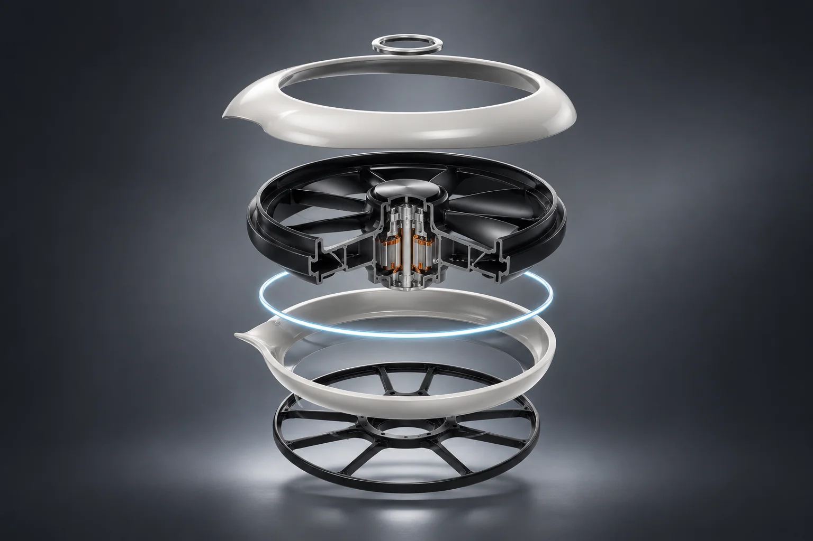
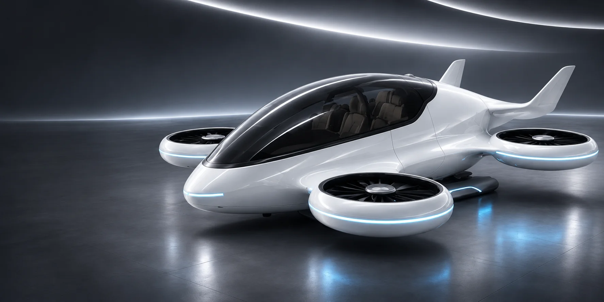
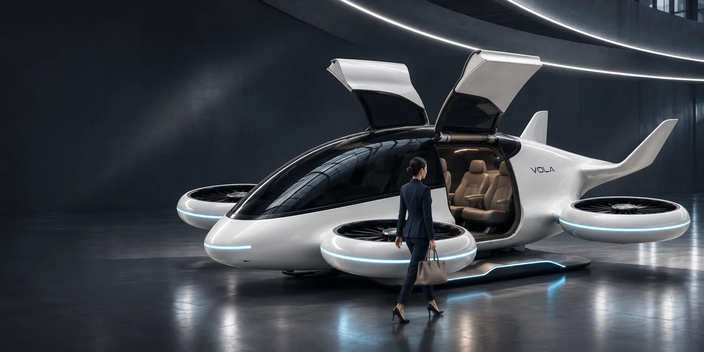
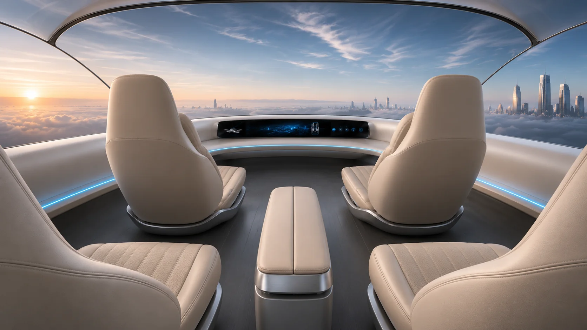
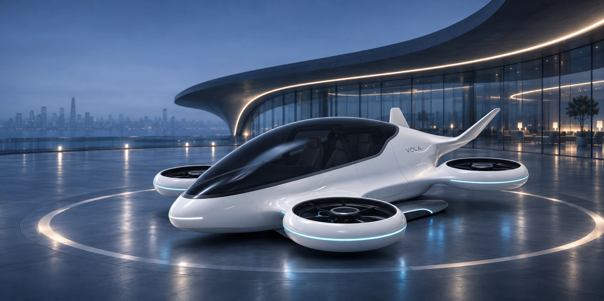
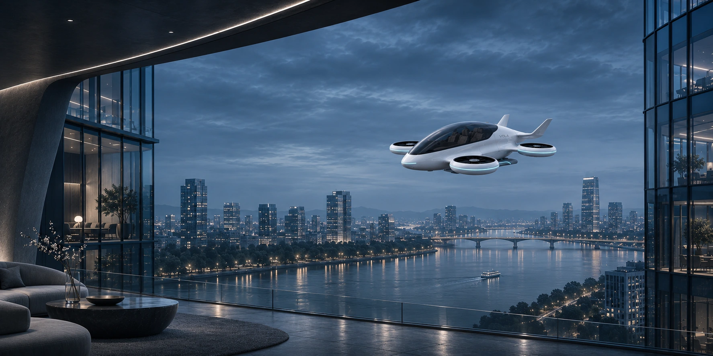

01 / ROTOR STRUCTURE
环形动力单元
涵道旋翼与环形外罩共同塑造飞行器的鲜明轮廓。

结构为概念示意，实际装配以模型为准。

A DIFFERENT WAY TO CONNECT
当出行向天空延伸，城市不再只有一种连接方式。VOLA 将流动曲面、四组分布式电推进与全景座舱融为一体，探索安静、直观而富有温度的未来体验。
以上为概念设计目标，未进行实测或适航验证。
THE DIGITAL HANGAR / 01
旋翼几何来自原始模型，独立分组演示旋转。

04 / FORM & DETAIL
从环形动力单元到一体化光带，让技术细节成为视觉语言的一部分。
涵道旋翼与环形外罩共同塑造飞行器的鲜明轮廓。

结构为概念示意，实际装配以模型为准。
冰蓝色特征灯与流畅曲面相连，勾勒属于 VOLA 的识别语言。

04 / CABIN EXPERIENCE
全景视野、柔和灯光与四座布局，让每一段旅程都拥有属于自己的空间。
A QUIETER WAY TO TRAVEL
上翻式舱门邀请乘客从容登机；温润座椅与环绕式界面共同塑造安静、直观的座舱体验。每一处触点，都服务于更自然的连接。
05 / NEW HORIZONS
从城市交通到机场接驳，探索短途空中出行的不同场景。

让不同旅程之间的连接更从容。

在城市之间，重新理解距离。
VOLA / VERTICAL ON-DEMAND LIFT AVIATION